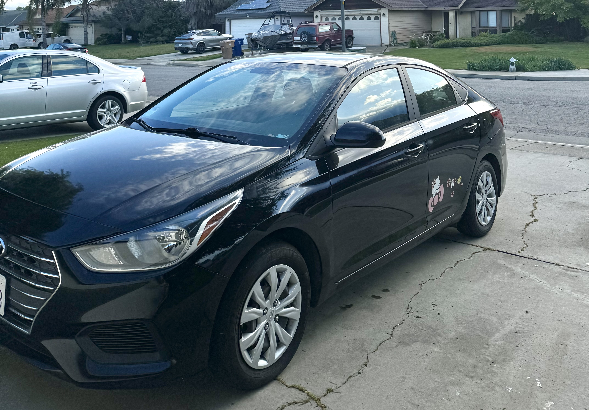

Lab 6 - Arrays and Objects

Challenge
With our partner we had to experiment with basic JavaScript Arrays and Objects.
Problems
I had some trouble on the JavaScript Console and having the age pop up but once I figured it out everything else went smoothly.
Reflection
I took me about 3 hours to complete this lab. I put in alot of effort to make sure everything worked correctly, and it did! I am very proud of my work and how much my coding skills have improved.
Results
You are currently looking at my finished index.html and my program execution!